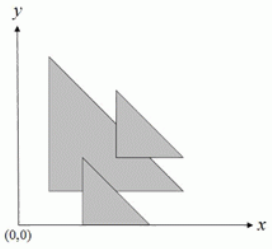

二维平面中，给定 $N$个等腰直角三角形（每个三角形的两条直角边分别平行于坐标轴，斜边从左上到右下）。我们用三个非负整数 $(x,y,d)$ 来描述这样一个三角形，三角形三个顶点的坐标分别为 $(x,y), (x+d,y)$ 和 $(x,y+d)$。要求计算这 $N$个三角形所覆盖的总面积。例如，下图有 $3$ 个三角形，覆盖的总面积为 $11.0$。

输入第一行为一个正整数 $N$，表示三角形的个数。接下来的 $N$行每行有用空格隔开的三个非负整数，$x,y,d$，描述一个三角形的顶点坐标，分别为 $(x,y), (x+d,y), (x,y+d)$，其中 $x,y,d$满足 $0≤x,y,d≤1000000$。
对于 $50\%$的数据，$1≤N≤500$；
$100\%$的数据，$1≤N≤10000$。
仅包含一行，为一个实数 $S$，表示所有三角形所覆盖的总面积，输出恰好保留一位小数。输入数据保证 $S≤2^{31}$。
3 1 1 4 2 0 2 3 2 2
11.0
 Comet OJ
Comet OJ